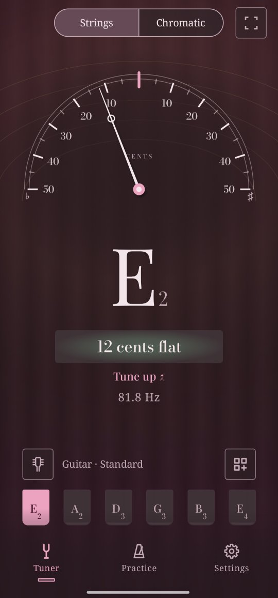

The tuner
Play one string. Twangle shows its note, and the meter shows how far it is from being in tune.
Tune a string
- Tap the headstock button above the strings and pick your instrument and tuning, for example Guitar · Standard.
- Play one string and let it ring.
- Turn the peg the way Twangle says, Tune up or Tune down, until the needle stands in the middle and the note shows in tune.
Twangle finds the string by itself. To stay on one string, tap it: Twangle then says Play the A2 string and listens only for that one. Tap it again to let Twangle choose.
How far off: cents
A cent is a hundredth of a semitone, the step from one fret to the next. Under the note Twangle shows how many cents it is off, for example 12 cents flat (too low) or 8 cents sharp (too high).
A note counts as in tune within 5 cents. For a tighter check, set Settings → In-tune precision to Precise: within 2 cents. In Settings you can also have the phone give a short buzz when a note reaches pitch, or show a moving wave under the note instead of the numbers.
Strings or chromatic
The switch at the top picks how Twangle listens. Strings compares what you play with the strings of your tuning, and shows them along the bottom. Chromatic names any note, for an instrument Twangle doesn't list, or for your voice.
Your tuning
The instrument and tuning panel lists the common tunings of each instrument: for the guitar Standard, Drop D, DADGAD, open tunings and more. Lower by, at the bottom of the panel, takes any tuning down by up to 2½ steps. New tuning, at the end of the list, makes a tuning of your own.
Tune by ear
Hold a string's button to hear its note, in your instrument's own sound: a plucked string for the guitar, a bowed one for the violin. It sounds for about four seconds; tap any string to stop it sooner. The phone's volume keys set how loud it is. While the note sounds, the tuner doesn't listen, so it never tunes to itself.
Playing with others
Most music tunes the A above middle C, called A4, to 440 Hz. Orchestras often tune to 442 Hz, baroque ensembles to 415 Hz. Set it in Settings → Reference pitch (A4), anywhere from 415 to 466 Hz. Everything follows it: the tuner, the reference tones and the other tools.
When it can't hear you well
The tuner says so under the note: Play a bit louder, Too noisy here, or Too loud, move the phone back. Hold the phone near your instrument, away from other sounds, and let the string ring rather than plucking it again and again.
For the curious: how Twangle hears a note
A plucked string repeats the same wave many times a second. About 47 times a second, Twangle takes the latest sound from the microphone (the last 85 milliseconds, twice that for low strings such as a bass's) and looks for how long it takes the wave to repeat, with the YIN method of Alain de Cheveigné and Hideki Kawahara (2002). That time gives the frequency, and the frequency gives the note and how many cents it is off. Twangle's own tests hold it to within one cent on test tones.
A new note shows once a few readings agree, and the needle is smoothed so it doesn't jitter, without lagging behind your peg.
For the curious: why Twangle asks for the unprocessed microphone
For calls and video, a phone cleans up the microphone's sound: it evens out the volume and takes away what it thinks is noise. That cleaning changes a note's wave, so the pitch can read wrong and a dying note can vanish. Twangle asks Android for the microphone's sound unprocessed, or, on phones that don't offer that, the sound meant for speech recognition with the cleaning turned off.
The sound is only analysed, while the tuner is on the screen. It is never recorded, saved or sent anywhere: Twangle has no permission to use the internet.
